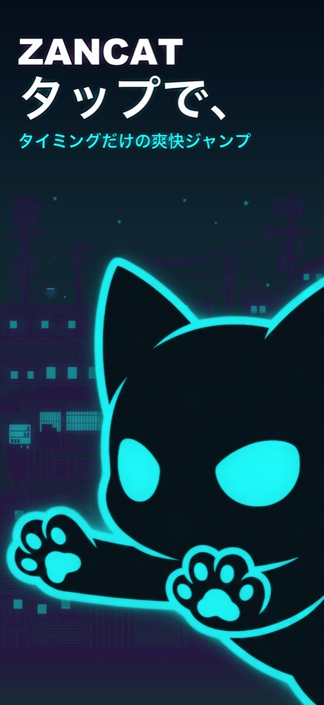
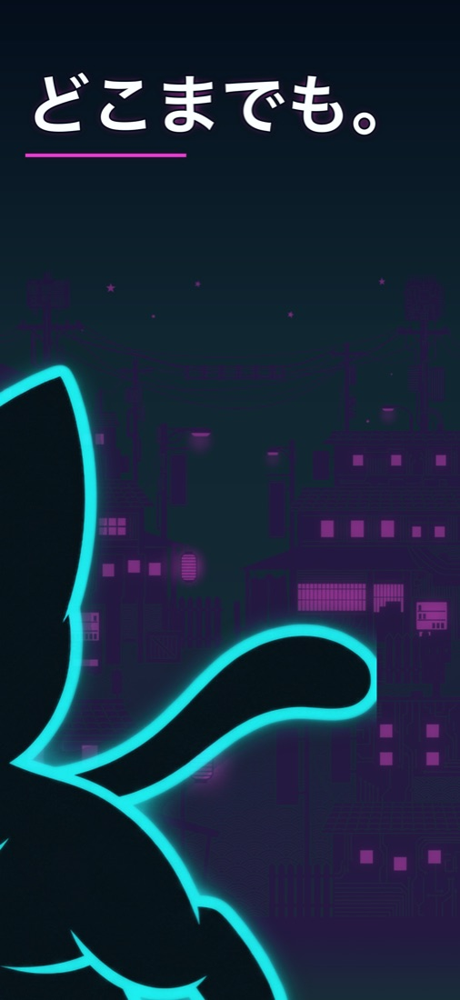
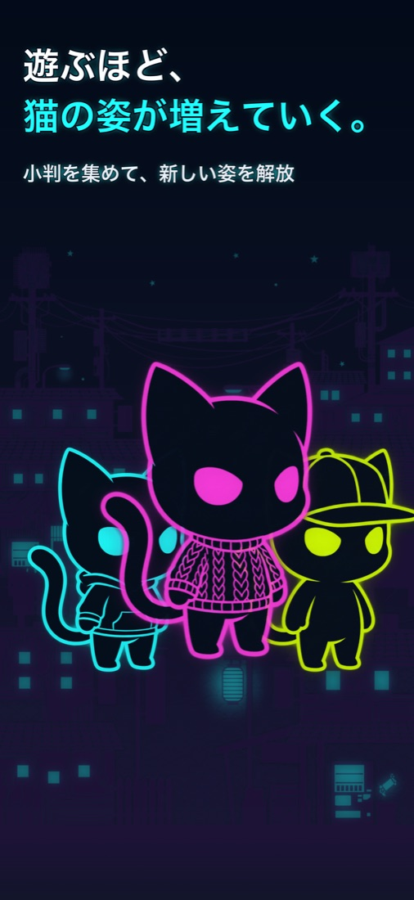
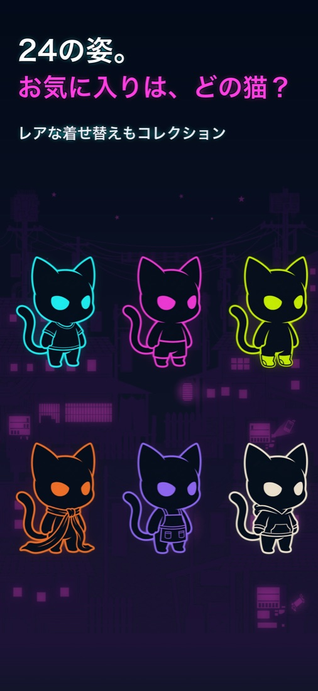
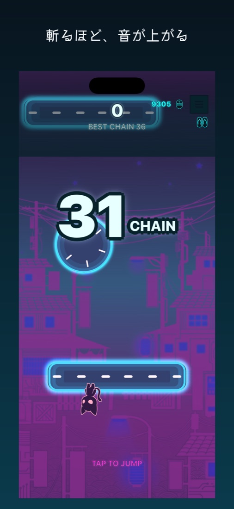

離してジャンプ
猫は足場のふちを進み続ける。向きが合った瞬間にタップを離そう。
タップでジャンプ。
タイミングだけの爽快アクション。
小判を集め、プレイを重ねて、いろんな猫の姿をコレクション。隙間時間で、どこまでも上へ。
iPhone版・近日公開

狙うのは、次の足場へ飛び移る一瞬。
猫は足場のふちを進み続ける。向きが合った瞬間にタップを離そう。
チェインが伸びるほどスコアも、音も、ネオンの演出も派手になる。
短いプレイでもすぐ再挑戦。自分のベストを、片手で更新していこう。
スコアを重ねて新しい姿を解放。お気に入りの猫で次のランへ。



iPhone版を準備中です。